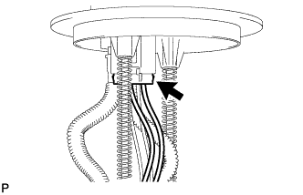
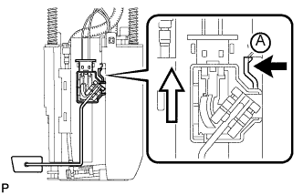

ДАТЧИК УРОВНЯ ТОПЛИВА В СБОРЕ (для моделей с одиночным баком) > СНЯТИЕ |
| 1. СНИМИТЕ ТОПЛИВОЗАБОРНИК С БЕНЗОНАСОСОМ И ДАТЧИКОМ УРОВНЯ ТОПЛИВА В СБОРЕ |
Снимите топливозаборник с бензонасосом и датчиком уровня топлива в сборе (Нажмите здесь).
| 2. СНИМИТЕ ДАТЧИК УРОВНЯ ТОПЛИВА В СБОРЕ |
|  |
Отсоедините разъем датчика уровня топлива.
|  |
Нажмите на захват датчика уровня топлива А. Затем сдвиньте датчик вверх, чтобы снять его.
 | Нажмите |
 | Продольное перемещение |